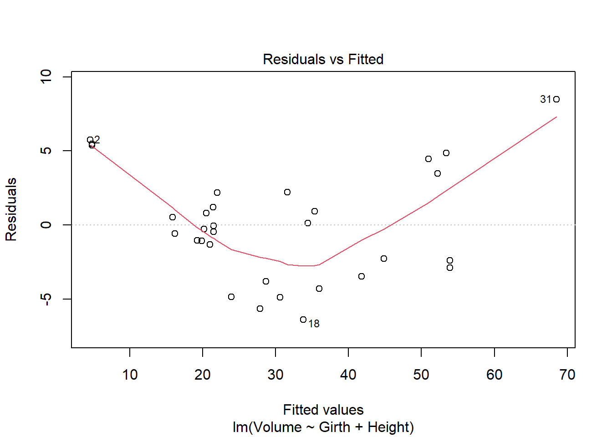
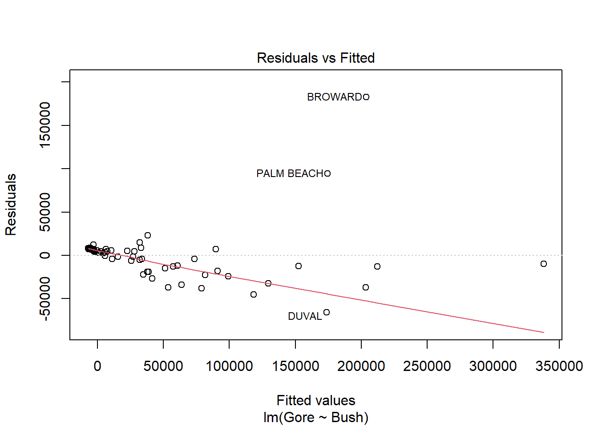
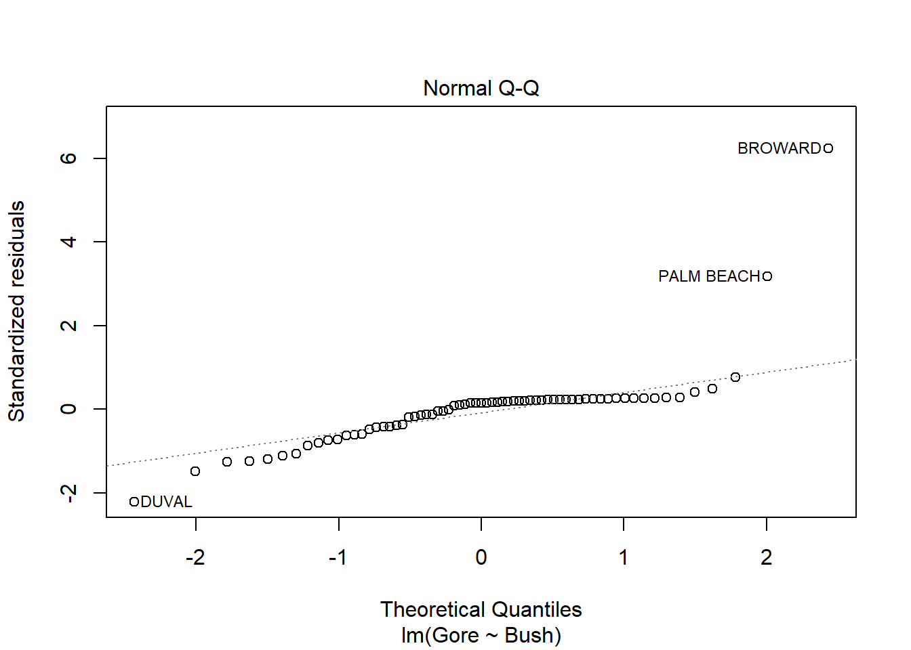
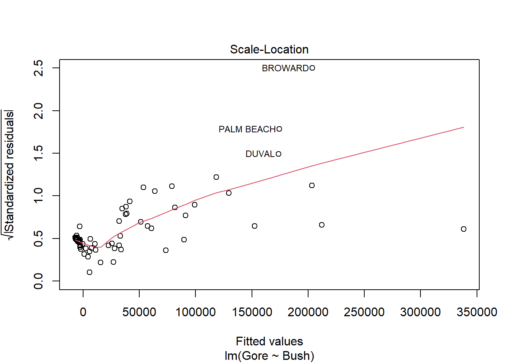
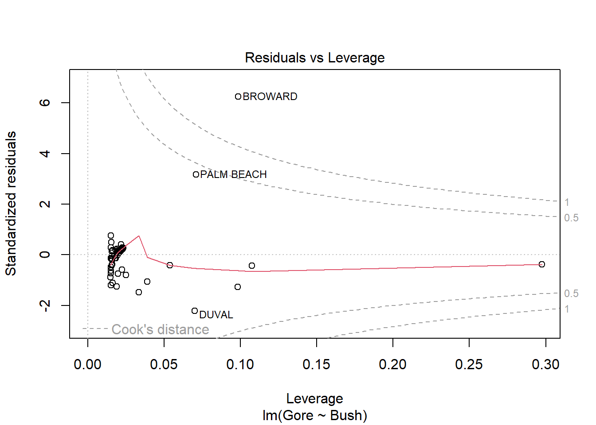
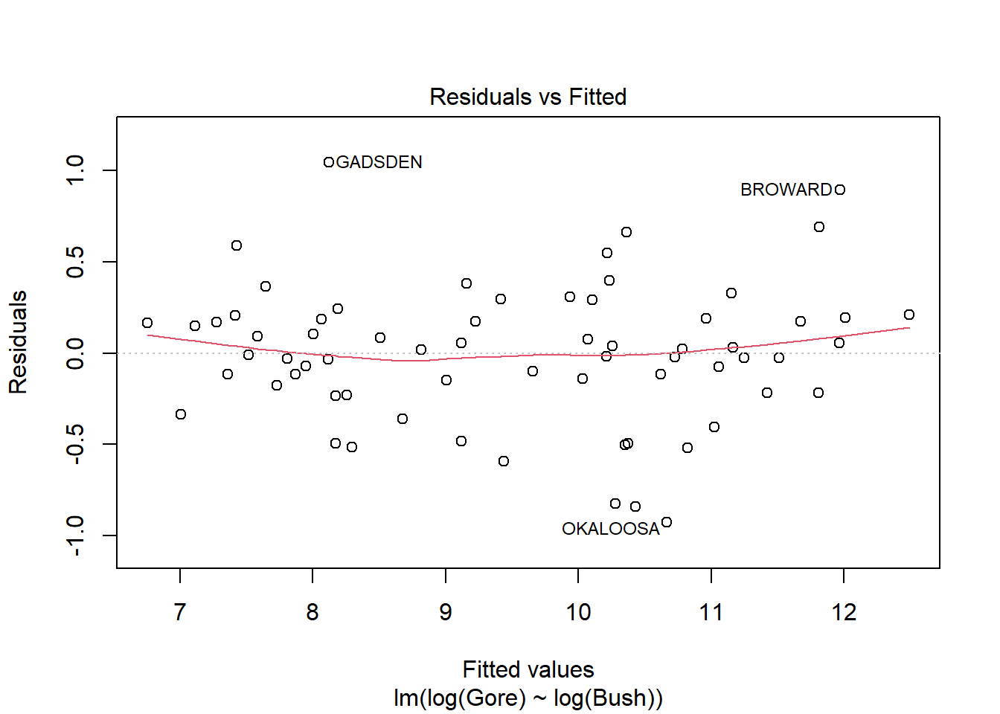
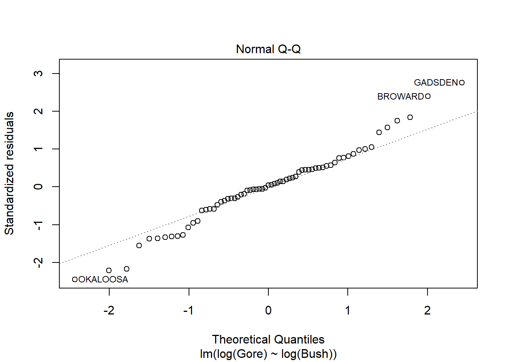
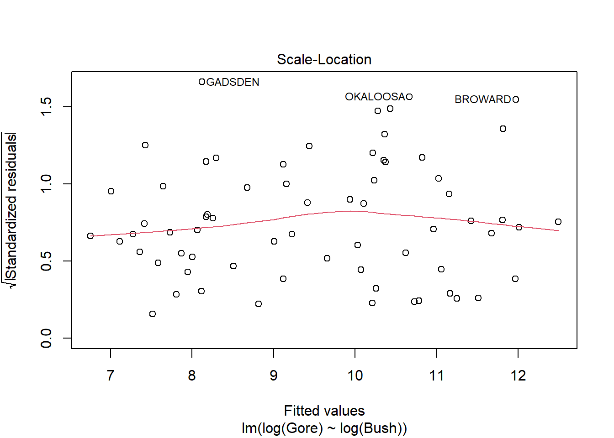
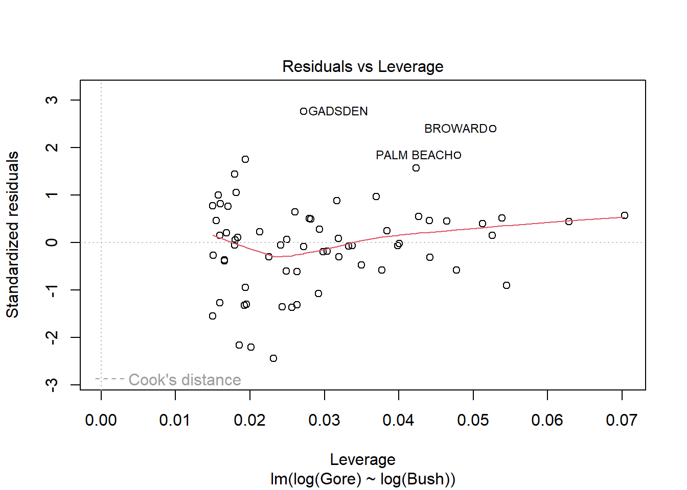

Code
library(alr4)Loading required package: carLoading required package: carDataLoading required package: effectslattice theme set by effectsTheme()
See ?effectsTheme for details.Code
library(smss)library(alr4)Loading required package: carLoading required package: carDataLoading required package: effectslattice theme set by effectsTheme()
See ?effectsTheme for details.library(smss)data("house.selling.price.2")Using backward elimination, Beds would be removed first.
Using forward elimination, New would be selected first.
Because Beds is correlated to Size, which is correlated to Price, so inherently, more Beds has an impact on Price but still have a low p-value.
fit <- lm(Price ~ . -Size -Beds -Baths -New, data=house.selling.price)Error in is.data.frame(data): object 'house.selling.price' not foundsummary(fit)Error in summary(fit): object 'fit' not foundfit <- lm(Price ~ . -Size -Baths -New, data=house.selling.price)Error in is.data.frame(data): object 'house.selling.price' not foundsummary(fit)Error in summary(fit): object 'fit' not foundfit <- lm(Price ~ . -Size -New, data=house.selling.price)Error in is.data.frame(data): object 'house.selling.price' not foundsummary(fit)Error in summary(fit): object 'fit' not foundfit2 <- lm(Price ~ . -New, data=house.selling.price)Error in is.data.frame(data): object 'house.selling.price' not foundsummary(fit)Error in summary(fit): object 'fit' not foundfit2 <- lm(Price ~ . -New -Size, data=house.selling.price)Error in is.data.frame(data): object 'house.selling.price' not foundsummary(fit)Error in summary(fit): object 'fit' not foundfit2 <- lm(Price ~ . -New -Size -Beds, data=house.selling.price)Error in is.data.frame(data): object 'house.selling.price' not foundsummary(fit)Error in summary(fit): object 'fit' not foundsummary(fit)Error in summary(fit): object 'fit' not foundAIC(fit)Error in AIC(fit): object 'fit' not foundBIC(fit)Error in BIC(fit): object 'fit' not foundsummary(fit2)Error in summary(fit2): object 'fit2' not foundAIC(fit2)Error in AIC(fit2): object 'fit2' not foundBIC(fit2)Error in BIC(fit2): object 'fit2' not foundI prefer the model generated by backward elimination, since the AIC, BIC, and multiple R-squared statistics are higher.
data("trees")fit <- lm(Volume ~ Girth + Height, data=trees)
summary(fit)
Call:
lm(formula = Volume ~ Girth + Height, data = trees)
Residuals:
Min 1Q Median 3Q Max
-6.4065 -2.6493 -0.2876 2.2003 8.4847
Coefficients:
Estimate Std. Error t value Pr(>|t|)
(Intercept) -57.9877 8.6382 -6.713 2.75e-07 ***
Girth 4.7082 0.2643 17.816 < 2e-16 ***
Height 0.3393 0.1302 2.607 0.0145 *
---
Signif. codes: 0 '***' 0.001 '**' 0.01 '*' 0.05 '.' 0.1 ' ' 1
Residual standard error: 3.882 on 28 degrees of freedom
Multiple R-squared: 0.948, Adjusted R-squared: 0.9442
F-statistic: 255 on 2 and 28 DF, p-value: < 2.2e-16plot(fit)


Residuals vs Fitted violation: curvature
Scale-Location violation: positive trend
data(florida)fit <- lm(Gore ~ Bush, data=florida)
summary(fit)
Call:
lm(formula = Gore ~ Bush, data = florida)
Residuals:
Min 1Q Median 3Q Max
-65960 -12515 4534 7181 182682
Coefficients:
Estimate Std. Error t value Pr(>|t|)
(Intercept) -8.617e+03 4.744e+03 -1.816 0.0739 .
Bush 1.198e+00 6.657e-02 18.002 <2e-16 ***
---
Signif. codes: 0 '***' 0.001 '**' 0.01 '*' 0.05 '.' 0.1 ' ' 1
Residual standard error: 30820 on 65 degrees of freedom
Multiple R-squared: 0.8329, Adjusted R-squared: 0.8304
F-statistic: 324.1 on 1 and 65 DF, p-value: < 2.2e-16plot(fit)



Palm Beach County is an outlier based on falling out of the group in the residuals vs. fitted and Q-Q plots. The Residuals vs. Leverage is just on the line, but it still supports Palm Beach being an outlier.
fit <- lm(log(Gore) ~ log(Bush), data=florida)
summary(fit)
Call:
lm(formula = log(Gore) ~ log(Bush), data = florida)
Residuals:
Min 1Q Median 3Q Max
-0.92986 -0.19820 0.01858 0.19148 1.04574
Coefficients:
Estimate Std. Error t value Pr(>|t|)
(Intercept) -0.88437 0.31982 -2.765 0.0074 **
log(Bush) 1.06362 0.03234 32.885 <2e-16 ***
---
Signif. codes: 0 '***' 0.001 '**' 0.01 '*' 0.05 '.' 0.1 ' ' 1
Residual standard error: 0.384 on 65 degrees of freedom
Multiple R-squared: 0.9433, Adjusted R-squared: 0.9424
F-statistic: 1081 on 1 and 65 DF, p-value: < 2.2e-16plot(fit)



Palm Beach County does not appear to be an outlier.